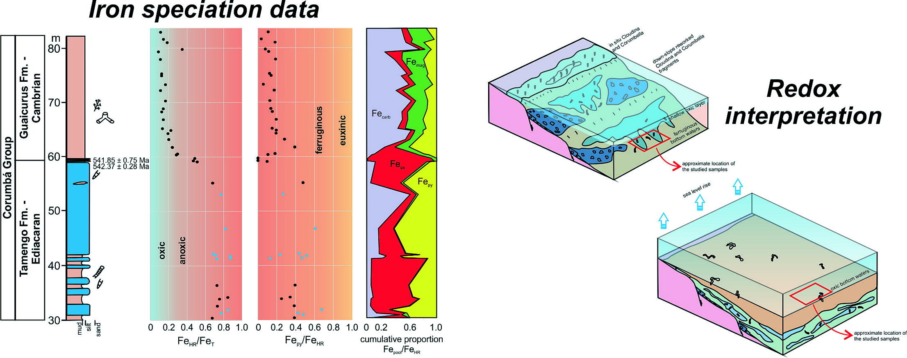

A shift in redox conditions near the Ediacaran/Cambrian transition and its possible influence on early animal evolution, Corumbá Group, Brazil

Resumo em Português
A transição Ediacarano-Cambriana testemunhou algumas das mais importantes mudanças biológicas, tectônicas, climáticas e geoquímicas da história da Terra. De suma importância para a evolução animal precoce é a provável mudança nas condições redox das águas de fundo, que pode ter ocorrido em pulsos distintos durante o Ediacarano tardio e o Paleozoico inicial. Para rastrear as mudanças redox durante essa transição, apresentamos novos dados de elementos traço, carbono orgânico total, isótopos de carbono inorgânico e orgânico e os primeiros dados de especiação de ferro das formações Tamengo e Guaicurus do Grupo Corumbá, no oeste do Brasil, que registram importantes mudanças paleobiológicas entre 555 Ma e <541 Ma. A Formação Tamengo, estratigraficamente mais antiga, é composta principalmente por calcários com intercalações de margas e argilitos, e contém fragmentos de fósseis biomineralizados do Ediacarano superior, como Cloudina lucianoi e Corumbella werneri. A Formação Guaicurus, mais jovem, representa uma transgressão regional da plataforma carbonática rasa e é composta por uma sucessão siliciclástica fina e homogênea, com tocas bilaterais de meiofauna. Os novos dados de especiação de ferro revelam condições predominantemente anóxicas e ferrugíneas (não sulfídicas) nas águas de fundo durante a deposição da Formação Tamengo, com FeHR/FeT em torno de 0,8 e FePy/FeHR abaixo de 0,7. A transição da Formação Tamengo para a Formação Guaicurus é marcada por uma queda estratigraficamente rápida em FeHR/FeT para abaixo de 0,2, registrando uma mudança para condições provavelmente óxicas nas águas de fundo, que persistem para cima na seção. As concentrações de elementos sensíveis ao redox (RSE) são atenuadas em ambas as formações, porém consistentes com condições não sulfídicas nas águas de fundo ao longo de toda a seção. Os dados são interpretados como refletindo uma transição entre dois contextos paleoambientais distintos: a Formação Tamengo representa um ambiente com águas de fundo anóxicas, com fragmentos de organismos biomineralizados que viviam em águas rasas provavelmente levemente oxigenadas e que foram transportados encosta abaixo; a Formação Guaicurus, por sua vez, registra a expansão das condições óxicas para águas mais profundas durante uma elevação do nível do mar. Os resultados demonstram uma relação sincrônica inequívoca entre a oxigenação da bacia de Corumbá e o aparecimento local de bioturbadores de meiofauna.